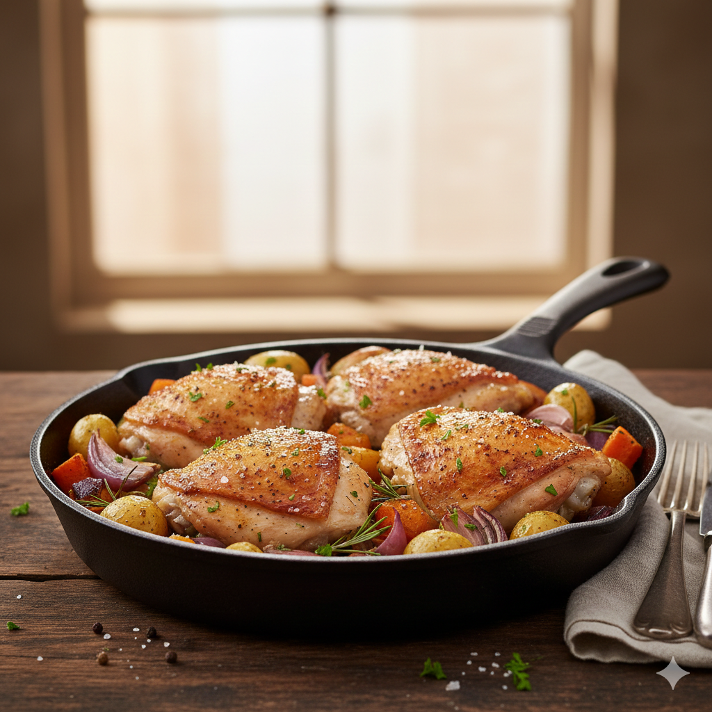

Baked Chicken Thighs
Home

Description
The Quintessential Comfort: Crispy Baked Chicken Thighs
Baked chicken thighs are the unsung heroes of the weeknight dinner. While
breasts often get the spotlight for being "lean," the thigh is where the
real flavor and juiciness reside. When baked correctly, they offer a
stunning contrast between shatteringly crisp skin and succulent, tender
meat.
Why They are a Kitchen Favorite:
- Forbearance: Unlike leaner cuts, thighs are incredibly forgiving. Thanks to their higher fat content, they remain juicy even if they stay in the oven a few minutes too long.
- Golden Standard: Achieving that perfect, mahogany-colored skin is the goal—it acts as a natural "lid" that seals in moisture.
- Versatility: They act as a blank canvas for flavors, whether you're going for a Mediterranean lemon-herb rub, a smoky chipotle glaze, or a simple garlic-butter baste.
- One-Pan Potential: They play well with others. Tossing them in a skillet with root vegetables—like the potatoes and onions in the image—allows the chicken drippings to season the sides as they roast.
Ingredients
- 4 bone-in skin-on chicken thighs
- 4 teaspoons garlic powder
- 4 teaspoons dried minced onions
- 1 teaspoon salt
Steps
- Preheat the oven to 190 degrees C (375 degrees F)
- Place chicken thighs in a baking dish; season both sides with garlic powder, dried minced onion, and salt
- Bake in the preheated oven until no longer pink at the bone and juices run clear, about 45 minutes. An instant-read thermometer inserted into thickest part of thigh, near the bone, should read 74 degrees C(165 degrees F)